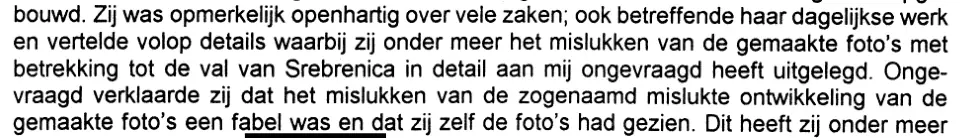

Dokaz · Krivična prijava
Krivična prijava haškoj policiji, 12. juna 2000.
Odlomak
„Neobično je otvoreno govorila o mnogim stvarima; i o svom svakodnevnom poslu, te je iznosila mnoštvo pojedinosti, pri čemu mi je, između ostalog, sama od sebe detaljno objasnila neuspjeh snimljenih fotografija u vezi s padom Srebrenice. Sama od sebe izjavila je da je neuspjeh navodno neuspjelog razvijanja snimljenih fotografija izmišljotina i da je fotografije i sama vidjela.“ Stranica 1, iz pasusa ispod međunaslova „Kennismaking met mevrouw Barbara Overduin“ (‚Upoznavanje s gospođom Barbarom Overduin‘). Dvostruka formulacija „neuspjeh navodno neuspjelog razvijanja“ prenosi njenu verziju: prema njoj, razvijanje fotografija dakle nije bilo neuspješno. Prijevod s nizozemskog; izvorni tekst naveden je ispod.
Izvorni tekst
“Zij was opmerkelijk openhartig over vele zaken; ook betreffende haar dagelijkse werk en vertelde volop details waarbij zij onder meer het mislukken van de gemaakte foto’s met betrekking tot de val van Srebrenica in detail aan mij ongevraagd heeft uitgelegd. Ongevraagd verklaarde zij dat het mislukken van de zogenaamd mislukte ontwikkeling van de gemaakte foto’s een fabel was en dat zij zelf de foto’s had gezien.” U prijavi je ime napisano kao „Barbara Overduin“, kao i u prvom izdanju knjige; kasnija izdanja anonimiziraju njeno ime, a esej koristi „Overduyn“. Riječi koje su u izvorniku rastavljene na dva reda, poput „Onge-“ i „vraagd“, ovdje su spojene.

Zašto je ovaj dokument važan
Haška kriminalistička policija je u julu 1999. odbila zaprimiti Giltayevu krivičnu prijavu. Tek nakon što je načelnik policijskog distrikta N. Laagland Giltayevu pritužbu proglasio utemeljenom u dvije tačke i u martu 2000. se izvinio, prijava za uvredu i klevetu je ipak zaprimljena 12. juna 2000. Time je Giltay zabilježio šta mu je uposlenica Vojne obavještajne službe rekla o fotografskom materijalu: da je neuspjeh razvijanja izmišljotina i da je fotografije i sama vidjela.
Porijeklo
- Dokument
- Krivična prijava, stranica 1 od 5
- Pošiljalac
- Edwin Franciscus Giltay, Scheveningen
- Primalac
- Regionalna policija Haaglanden, policijska stanica Duinstraat 23, Scheveningen
- Datum
- 12. juna 2000.
- Predmet
- Uvreda i kleveta, članovi 261 i 262 Krivičnog zakona Nizozemske
- Navedena kao osumnjičena
- Barbara Overduin, koja je prema prijavi danju radila u Vojnoj obavještajnoj službi
- Ishod
- Prema pismu od 19. septembra 2000. o rješavanju prijave (broj PL1523/1999/16079), na memorandumu policije Haaglanden i s potpisom u ime javnog tužioca, istraga nije dala rezultat i odložena je u evidenciju („opgelegd“). Pismo se čuva u arhivu autora
- Ponuđeni dokazi
- Pokazano i predano radi prilaganja zapisniku: službena potvrda firme N.V. Casema od 8. juna 1999. i pismena izjava savjetnika u agenciji za zapošljavanje od 20. maja 1999. (stranica 1); dvije izjave bivšeg kolege iz Caseme, od 26. maja i 10. juna 1999. (stranice 2 i 3); potvrda prijema Nacionalnog ombudsmana od 28. decembra 1998. za predstavku od 1. decembra 1998.; bilješka od 12. februara 1999. o saslušanju Overduyn, koju su po nalogu načelnika štaba Vojne obavještajne službe sačinili major De Ruyter i drugi (stranica 3); kopija ugovora o radu s firmom Multec Ondersteuning B.V. od 6. juna 1994.; izjava firme IBM Nederland N.V. od 18. oktobra 1994.; obrazac za ocjenu rada na engleskom jeziku od 6. aprila 2000., koji je sačinio Giltayev nadređeni u firmi Deloitte & Touche Consulting Group; javni izvještaj 99/507 Nacionalnog ombudsmana od 17. decembra 1999. (stranica 4); i poziv policije Haaglanden na uvid u njegove policijske podatke 14. oktobra 1998. (stranica 5)
- Jezik
- Nizozemski
- Mjesto čuvanja
- Arhiv autora
- Vidi također
- Načelnik policijskog distrikta Giltayu, 26. marta 2000.Policija Haaglanden Giltayu o rješavanju krivične prijave, 19. septembra 2000.
Citirano u: eseju „Zabrana pala, knjiga opstala“ u poglavlju (3) „Šta knjiga otkriva: zataškavanje Srebrenice“.
Stranica dokaza: https://
Dokument: https://
Posljednja izmjena 13. septembra 2026., pristupljeno 9. oktobra 2026.

Ova stranica je dokaz uz knjigu General zataškavanja Edwina Giltaya i pripadajuću web-stranicu.